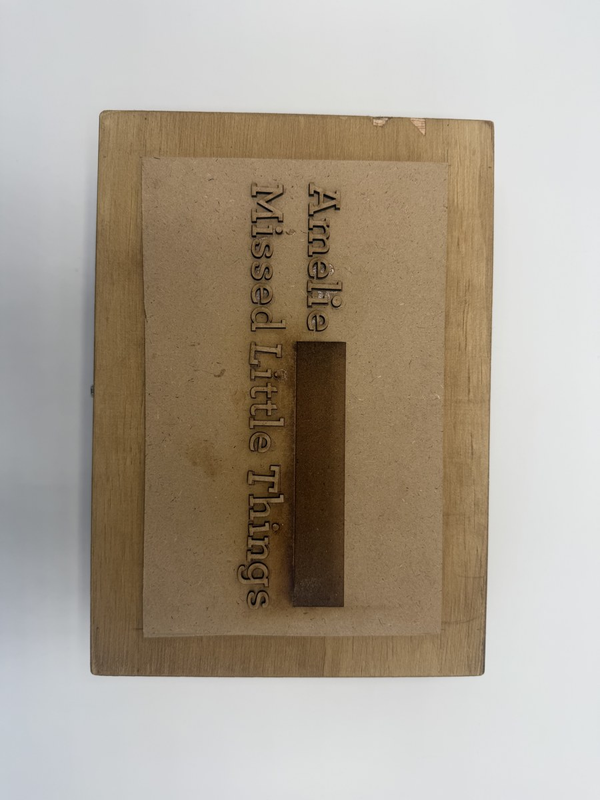
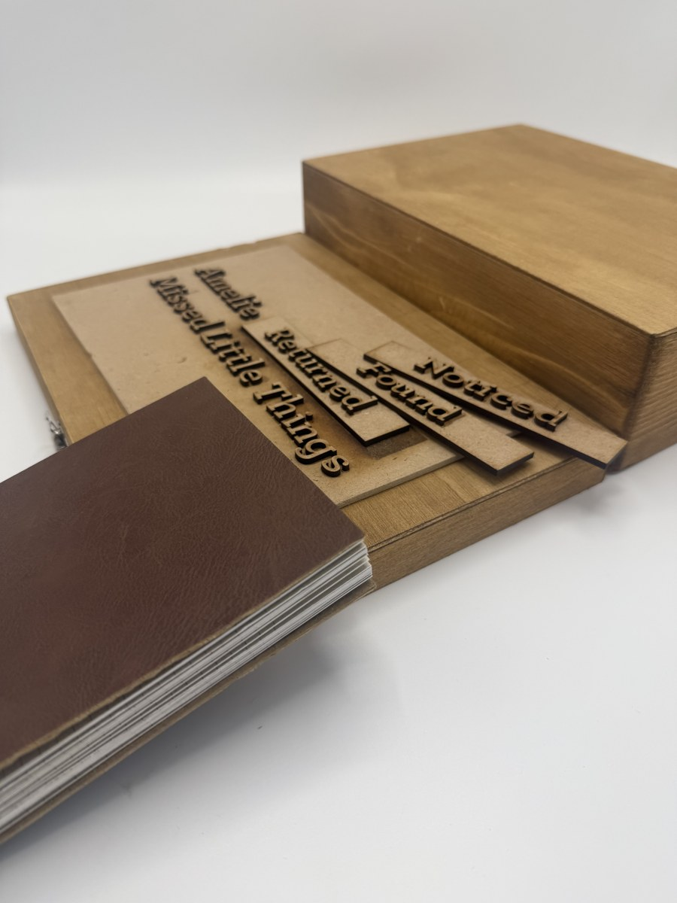

Concept 1 — Little Things explored Amélie's world through homemade, nostalgic feeling. Almost every character in the film is introduced through small, specific likes and dislikes rather than dramatic events. The concept used a leather-bound A5 format with folds, pop-outs, and die cuts. Typefaces: Parisine (designed by Jean François Porchez, used in the Paris Metro) and Archer.
Concept 2 — Loneliness Hurts leaned into Amélie's isolation — raised by a distant father, losing her mother early, never developing real human connection. The format was a loose A4 bound with envelopes, treating the book as something fragile and archival rather than resolved. Typefaces: Garamond and Helvetica (deliberately cold alongside the humanist Garamond).
Concept 3 — Romance of Reality (Chosen) grounded the project in the film's core observation: nothing that happens to Amélie is extraordinary, yet her relationship with the world makes it feel enviable. The book was printed tabloid (11 x 16"), hard cover, with die cuts and embossing. Typefaces: Baskerville and Avenir — one structured and classical, the other clear and neutral — together suggesting a world that is grounded yet open.

